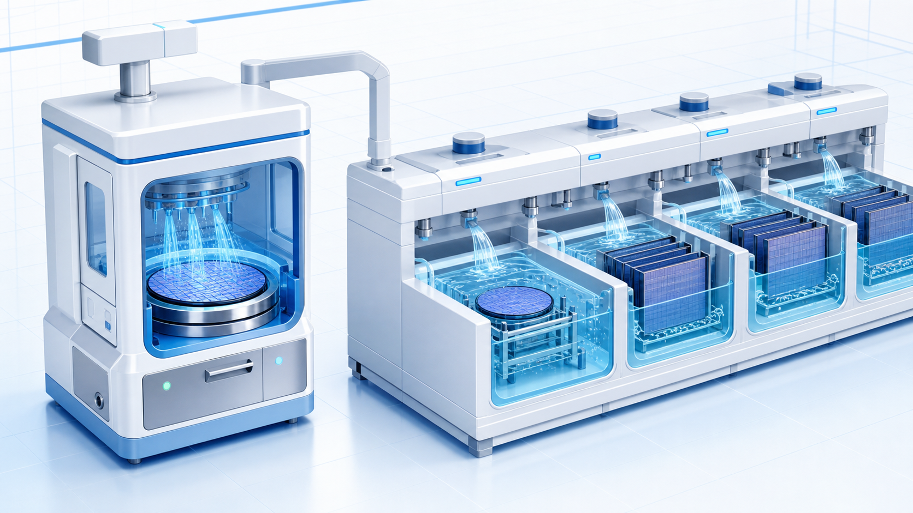
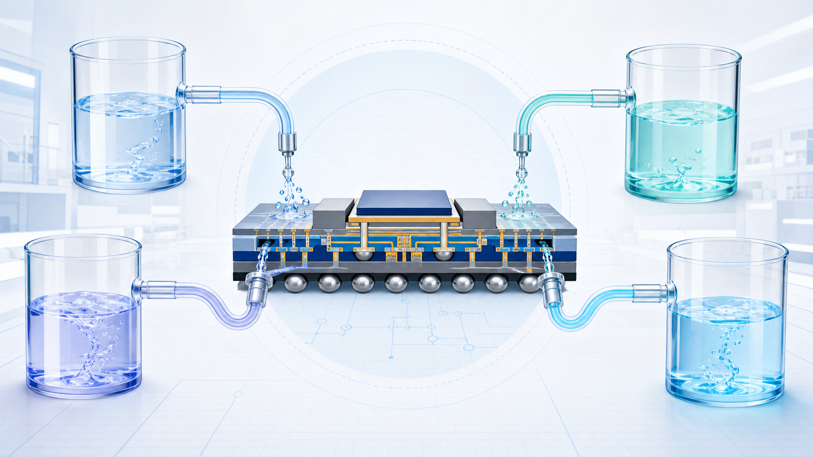

先進封裝常被放在 CoWoS、FOPLP、HBM、RDL 這些關鍵字底下討論，但在實際製程裡，有一群不太顯眼的環節會反覆出現：清洗、蝕刻、去光阻、去殘膠、去助焊劑、去氧化層。這些步驟多半和濕製程設備與化學藥液有關。
如果用一句話說，濕製程不是單純「洗晶圓」，而是在每個關鍵步驟之間，把不該留下的東西移除，同時不能傷到該留下的結構。這也是為什麼先進封裝越複雜，濕製程越像是一套風險管理系統。

濕製程在先進封裝中做什麼？
傳統半導體新聞裡，濕製程常被簡化成清洗或蝕刻。這樣說不算錯，但放到先進封裝就太簡化。專家討論中把 CoWoS 類型的濕製程拆成多個階段：pre-clean、TSV / RDL clean、micro-bump clean、pre-bond clean、flux clean、post / rework clean。每一段看起來都在「清洗」，但目的不一樣。
- Pre-clean：先把有機物、微粒或空氣吸附物去掉，讓後段製程有乾淨表面。
- TSV / RDL clean：處理銅種子層、聚合物殘留、介電材料殘留，影響後續線路與接觸品質。
- Micro-bump clean：處理微凸塊或 bump 表面的氧化與殘留，和接合可靠度有關。
- Pre-bond clean：在鍵合前處理氧化層、微粒與表面活化，對 hybrid bonding 尤其重要。
- Flux clean：移除助焊劑殘留，避免 underfill 出現空洞或長期可靠度問題。
- Post / rework clean：在返工或後段清洗中把殘膠與污染控制在可交付狀態。
一般投資人不需要記住每個英文名詞，但可以記住一個概念：濕製程的價值不在於「用水或藥水清洗」而已，而在於它決定哪些殘留能不能被移除、哪些表面能不能維持穩定、哪些風險能不能在量產前被控制住。
為什麼 CoWoS、InFO、FOPLP 的濕製程要求不同？
把 CoWoS、InFO、FOPLP 分開對理解上很有幫助，因為不同封裝架構放大的是不同風險。
CoWoS 比較接近高階晶片與中介層的整合，會碰到 TSV、RDL、銅種子層、pre-bond oxide removal 等問題。這些步驟和前段製程很接近，對選擇性、表面控制、大面積均勻性要求高。
InFO 則更強調封裝材料比例、殘膠、粒子移除與表面能控制。當 PI、EMC 等有機材料比例提高，清洗不再只是金屬或氧化層問題，也會牽涉不同材料對化學品的耐受度。
FOPLP 的挑戰是尺寸放大。面板變大後，warpage、流場均勻性、液體滲透不足、清洗死角、IPA drying 等問題會被放大。也就是說，過去在晶圓尺寸上可行的 recipe，不一定能直接放大到 panel-level 製程。
設備和化學藥液為什麼要一起看？
弘塑是濕製程設備商，添鴻科技則是弘塑旗下化學品材料商，這個組合剛好可以說明：濕製程不是買一台設備就結束，而是設備、藥水、參數和客戶製程一起調整。
例如同樣是清洗，設備端要控制旋轉、噴灑、浸泡、溫度、流場、megasonic 能量、乾燥方式；化學品端則要處理選擇性、溶解力、殘留、金屬離子、材料相容性。兩邊任何一邊失控，都可能導致表面不乾淨、殘留太多、微結構受損，或後續 bonding / underfill 出問題。

六家公司分別站在哪裡？
這篇文章不是要把六家公司寫成同一種公司，而是把它們放在同一條濕製程鏈上看。
| 公司 | 在這條鏈上的角色 | 一般讀者可以怎麼理解 |
|---|---|---|
| 弘塑 | 濕製程設備 | 像是負責「怎麼洗、怎麼蝕刻、怎麼去除殘留」的設備平台，重點在設備、藥水與 recipe 整合。 |
| 辛耘 | 晶圓與面板級濕製程設備 | 可放在 panel-level packaging、FOPLP、FoCoS 等放大後的濕製程需求中理解。 |
| 添鴻科技 | 蝕刻液、去光阻液、清洗液 | 代表弘塑體系中的化學品端，說明設備和藥液需要一起解決製程問題。 |
| 勝一 | 電子級溶劑 | 提供濕製程化學品常用的高純度溶劑基礎，支撐清洗、顯影、剝離等配方。 |
| 三福 | 精密化學品 | 可從顯影液、蝕刻液、光阻剝離劑、洗邊劑、研磨液代工等方向理解。 |
| 達興 | temporary bonding / de-bonding 與 remover | 和薄晶圓、臨時鍵合、RDL 材料、高純度特殊化學品有關，不宜只看成一般清洗液公司。 |
這條供應鏈真正的風險在哪？
先進封裝的濕製程風險大致分成三層。
第一層是表面能不能準備好。Pre-clean、TSV / RDL clean、micro-bump clean 如果沒做好，後續線路、凸塊或接合表面就可能出問題。
第二層是能不能穩定放大。FOPLP 或大尺寸 panel 不是把晶圓製程放大就好，因為尺寸一變，流場、乾燥、面板翹曲、清洗死角都可能變成新問題。
第三層是能不能長期可靠。Flux clean、post / rework clean、underfill 之前的殘留控制，都會影響封裝可靠度。這些問題不一定馬上反映在單一良率數字上，但可能影響後續壽命、返工與客戶驗證。
從新聞報導看，為什麼市場開始注意濕製程？
從產業脈絡來看，濕製程可以理解為半導體中的清洗與濕式蝕刻。它不是單純把表面洗乾淨，而是用化學反應、沖洗、乾燥與設備控制，把污染物、氧化層、殘膠或不需要的金屬層移除，讓後續製程能穩定接上。
這類新聞對一般讀者的價值，不在於精準解釋每一段 recipe，而是提醒大家：AI 與先進封裝拉動的不只是晶片設計或封裝產能，也會擴散到周邊製程設備與材料。濕製程正是其中一條不容易被看見、但反覆出現在製程中的鏈。
本篇整理
濕製程與化學藥液不是一個單點題目，而是一組連在一起的能力：設備要能穩定控制清洗、蝕刻、去除與乾燥；化學品要能在不傷害關鍵結構的前提下，移除特定殘留；客戶端還要把這些能力變成可量產的 recipe。
從這個角度看，弘塑、辛耘、添鴻科技、勝一、三福與達興放在同一篇文章中是合理的，但它們代表的是不同位置：有人做設備平台，有人做化學品，有人做溶劑，有人做 temporary bonding / remover。未來追蹤這條鏈，不應只看單一公司新聞，而要看先進封裝往 2.5D/3D、panel-level、RDL、hybrid bonding 前進時，哪一段清洗與去除風險被放大。
代表來源
- 弘塑：UFO-300C Series
- 辛耘：WSE Panel
- 添鴻科技：Cu Etchant
- 勝一：半導體應用產品頁
- 三福：官方網站
- 達興：Semiconductor Materials